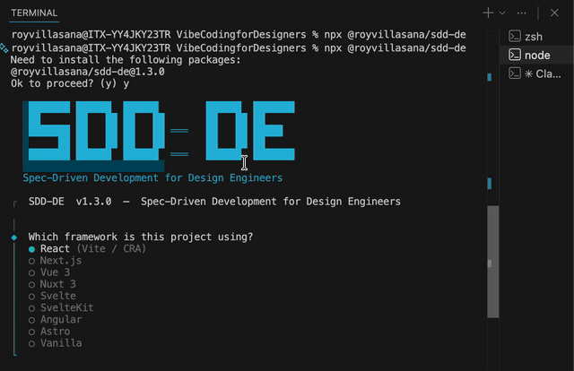

A portable methodology toolkit that installs into any frontend project and teaches AI coding agents to ship production-quality UI.
The CLI asks about your stack, installs the toolkit, and your AI agent is ready to follow the SDD workflow.

Setup — configuring framework, design source, and styling
SDD-DE supports 5 design sources. Choose yours below to see what you need to prepare before running the CLI.
Claude Code needs the Figma MCP server to read your design files. Set this up once — it takes under a minute.
Follow the official guide to add the Figma MCP remote server to Claude Code. This gives the AI agent direct access to read your Figma frames, variables, component properties, and styles. Figma MCP — Claude Code installation guide →
Open Claude Code and ask it to read a Figma file. If it can describe the frames and variables, the MCP is working. If not, check your authentication token and server configuration in the guide above.
Create a Variable Collection (e.g., "Tokens") with all your design tokens organized by category. These become CSS custom properties in your codebase.
Define all colors as variables: color/primary, color/primary-hover, color/secondary, color/text, color/surface, color/border, color/destructive. Use semantic names, not visual names (not "blue-500").
Spacing scale: spacing/xs (4px) through spacing/2xl (48px). Typography: font-size/xs through font-size/2xl. Radius: radius/sm through radius/full. Shadows: shadow/sm, shadow/md, shadow/lg.
Create every component as a proper Figma Component with variants. The agent reads component properties, variant names, and layer structure.
Name components as they should appear in code: Button, Input, SearchBar. Use PascalCase. Group with slashes: UI/Button, Modules/SearchBar.
Use Figma's component properties. Create Variant (Primary, Secondary, Ghost), Size (SM, MD, LG), and State (Default, Hover, Disabled, Loading) properties.
Every fill, padding, gap, radius, and font must reference a Figma variable — no hardcoded values. Use auto-layout for all spacing (maps to Flexbox in code).
For Epic 2, create page compositions at 3 breakpoints using component instances.
Create frames at 375px, 768px, and 1440px. Use instances of your component library — not detached copies. This ensures accurate imports in generated code.
npx @royvillasana/sdd-de, select Figma as your design source, and paste your Figma file URL. The AI agent can now read your design system and generate spec-accurate code.
Make sure the library is installed in your project before running the CLI.
Run the library's install command in your project: npx shadcn@latest init for shadcn/ui, npm install @mui/material for Material UI, npm install antd for Ant Design, etc. The CLI will ask which library you're using.
Have a list of the base components you'll customize: Button, Input, Card, Dialog, etc. The agent reads the library's documentation and API to generate specs that extend the base components with your design requirements.
Define your brand's token file so generated components reference your tokens, not the library defaults.
Create CSS custom properties for colors, spacing, radius, and typography in your token file (e.g., src/styles/tokens.css or app/globals.css). The CLI auto-suggests the path based on your framework.
npx @royvillasana/sdd-de, select Component Library, and choose your library (shadcn/ui, Material UI, Radix, Ant Design, Chakra, Mantine, or Headless UI). No MCP needed — the agent reads library docs directly.
The agent reads component source files directly from a GitHub repository.
You'll need the full GitHub URL (e.g., https://github.com/org/design-system), the branch name (usually main), and the path to the component directory (e.g., src/components).
The repository must be public, or you must have configured gh auth login so Claude Code can access private repos via the GitHub CLI.
The agent reads component patterns from the repo and generates code that references your local token file. Create the token file in your project before starting the cycle.
npx @royvillasana/sdd-de, select GitHub Repository, and enter your repo URL, branch, and component directory. The agent reads source files and generates specs based on the existing component patterns.
The agent reads component source files from a local ZIP file — useful for exported design systems or offline handoffs.
Place the .zip file in or near your project directory. Know the component directory path inside the archive (e.g., src/components). The agent will extract and read the source files.
Components inside the ZIP should follow standard patterns: one file per component, clear naming, typed props. The agent reads these as the source of truth for generating specs.
npx @royvillasana/sdd-de, select ZIP File, and enter the path to your archive and the component directory inside it.
Google Stitch can connect via live MCP or through an exported ZIP file.
Get your API key from stitch.withgoogle.com → Settings. The agent connects live to read screen code, images, and design tokens. You can optionally provide a project ID or list projects at runtime.
Export your Stitch project from the dashboard as a ZIP file containing design.md and screen PNGs. Place the ZIP in your project directory. The agent reads the design markdown and images as the spec source.
The agent maps every Stitch design value to a CSS custom property in your token file. Create the token file before starting — the CLI suggests the right path for your framework.
npx @royvillasana/sdd-de, select Google Stitch, and choose MCP (enter API key) or ZIP (enter file path). The agent reads your Stitch designs and generates token-mapped component specs.
Every component and every page follows the same disciplined cycle. The spec is the input to the AI — when it's complete, implementation becomes mechanical.
Build every UI building block before composing any page. Work from the smallest atoms up to complex organisms. Each component goes through the full 7-step cycle individually.
Follow atomic design order — each level depends on the one before it.
For each component, run the 7-step cycle:
/storybook. This installs Storybook, generates stories for every component (variants, states, accessibility tests), and launches a dev server at http://localhost:6006 so you can browse and interact with your entire component library before composing pages.
Compose the components you built in Epic 1 into complete pages, layouts, and product features. Only start a page once every component it needs exists in the library.
Start with templates, then fill them with real content.
Before starting each page:
/enrich-brief with the Figma page URL → /generate-artifacts → branch → implement → /visual-verify → /adversarial-review → /commit. The AI imports your Epic 1 components and composes them according to the Figma page layout.
/enrich-briefTransform a vague brief, Figma URL, or user story into an enriched story with acceptance criteria.
/generate-artifactsGenerate Component Spec, Interaction Spec, and Page Spec from the enriched story.
git checkout -bBranch before any implementation. One branch per component or page.
One spec task at a time. Mark [ ] → [x] when done. Style-encapsulated, token-referenced, accessible.
/visual-verifyCompare live implementation to the design spec. Zero discrepancies required to proceed.
/adversarial-reviewRed-team the implementation. Resolve all Blocker findings before committing.
/sync-tokens → /commitSync design tokens, then open a PR with the Component Spec as the description.
Type any command inside Claude Code, Cursor, or your AI agent. The agent reads the SKILL.md and executes the full procedure.
| Command | What it does |
|---|---|
| /setup | Configure project — framework, language, design source, styling |
| /enrich-brief | Transform brief into spec-ready enriched story with acceptance criteria |
| /generate-artifacts | Generate Component Spec + Interaction Spec + Page Spec |
| /visual-verify | Visual QA against the design spec — zero discrepancies required |
| /adversarial-review | Red-team implementation before committing |
| /sync-tokens | Sync design tokens between design source and code |
| /commit | Stage, commit, and open PR with Component Spec as description |
| /storybook | Install Storybook, generate stories for all components, launch dev server |
| /sync-agent-symlinks | Audit and repair broken editor symlinks |
Choose where your components and specs come from during setup. Every skill adapts to your source.
Reads frames, variables, and component specs via the Figma MCP. Live connection to your design files.
shadcn/ui, Material UI, Radix, Ant Design, Chakra UI, Mantine, Headless UI, or any library.
Reads component source files directly from any GitHub repo. Specify branch and component directory.
Reads component source files from a local ZIP archive. Works with any exported design system.
Google's AI design tool. Connects via Stitch MCP or reads an exported ZIP with design.md.
SDD-DE adapts to your stack. Components follow each framework's best practices for styling, file structure, and conventions.
| Approach | Encapsulation pattern |
|---|---|
| Tailwind CSS | Wrap utilities inside components via cva/clsx. Consumers pass variant props, never class names. |
| Styled Components | Module-scope styled wrappers. Data attributes for variants. CSS custom properties for dynamic values. |
| CSS Modules | One .module.css per component. Use composes for shared patterns. |
| SCSS / Sass | BEM modifiers nested inside one root class. Max 3 levels. |
| Vue Scoped | <style scoped> with class selectors. CSS custom properties for child theming. |
| Svelte | Auto-scoped <style>. CSS custom properties for child theming. |
The spec is not a deliverable — it is the input to the AI. When your spec is complete, implementation becomes mechanical. Visual QA becomes pass/fail.
All three spec artifacts must exist before any code is written. No implementation from briefs alone.
Every color, spacing, radius, and font value references a design token. No hardcoded hex or pixels.
Components own their styles through props and variants. Consumers never pass raw utility classes.
Compare live implementation to spec after every change. Discrepancies block the verify step.
Semantic HTML and ARIA are part of the spec. WCAG AA compliance. Focus rings. Contrast ratios.
Execute one spec task per session. Mark it complete before moving to the next. Never batch.
One command. No global install. Works with any frontend project.